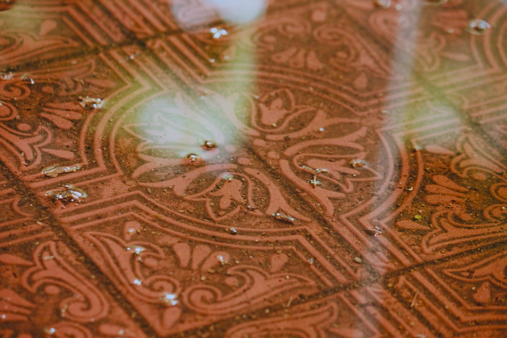

A sound Adelaide bathroom tile project starts with the layers below the finish: substrate condition, floor falls, drainage, membrane boundaries, penetrations, trims, movement joints and tile format. The source page identifies 6 service scopes, 3 planning stages before demolition, waterproofing and tiling, and 15 listed Adelaide locations where access, exposure or substrate type can affect preparation and sequencing.
For homeowners comparing bathroom tiling adelaide options, the useful starting point is not the tile colour alone, but the room condition, water exposure, substrate and written scope.
Bathroom Tiling Adelaide Explained
Adelaide Tiling & Waterproofing frames bathroom work around the visible tile finish and the concealed wet-area details. That is a useful way to brief a project because grout lines, tile size and trims are only part of the result. The base, falls, drainage, junctions and movement assumptions decide whether the finished surface has been planned as a complete wet-area system.
Before comparing quotes, describe what is already there. Note whether the job is a full renovation, a leaking shower concern, a regrout question, or a new tiled surface. Include the room, approximate age, visible moisture, cracked or loose tiles, previous repairs, fixture changes and access constraints. Photos and dimensions can come after the first enquiry, but the initial brief should separate condition, substrate, waterproofing and finish.
A practical scope should identify preparation, tile format, set-out, trims, grout, movement joints, access and waste. Where waterproofing or screeding is needed, it should be described separately so the quote is not just a square metre tile price with hidden assumptions.
Who This Applies To
This guide is for Adelaide homeowners, renovators and property managers who need to decide what information belongs in a tiling brief before they invite pricing. It is most relevant when a bathroom, ensuite, laundry or shower area has water exposure, existing defects, planned fixture changes, or adjoining floors that need a clean transition.
- Full bathroom renovation: ask how demolition, plumbing rough-ins, electrical rough-ins, floor falls, membrane boundaries, cabinetry, fixtures and finished floor heights will be coordinated.
- Shower repair or regrouting: ask whether the visible issue is likely to be maintenance, sealant, plumbing, movement, substrate or membrane related before accepting regrouting as the answer.
- Apartment or tight access work: record parking, lift use, waste removal and strata access questions so the provider can price practical site handling.
- Older or changed substrates: note previous renovations, cracking, loose finishes and any areas where the floor or wall surface may need closer inspection.
The named Adelaide examples on the source page are useful because they point to different site constraints, not because every suburb needs a different tile. City apartment access, coastal exposure around Glenelg and Henley Beach, older villa substrates through Norwood and Unley, and newer slabs around Mawson Lakes or Mount Barker can change preparation and sequencing.
Scope Questions Before Demolition
Bathroom renovation is broader than laying new tiles. The quote conversation should happen before finishes are ordered because tile module, niche position, waste location, threshold height and cabinetry lines can affect set-out. If these details are decided late, the tile work may need trims, cuts or transitions that were not obvious from a mood board.
For wet-area waterproofing, ask the provider to confirm the substrate, falls, wastes, penetrations, thresholds and membrane system with the responsible party. The source page is careful on cure timing: it depends on the membrane system, film thickness and site conditions, and the installer should follow the product specification and record the system used instead of relying on a universal waiting period.
Use the same discipline for repairs. Tiles and grout are finishes, while the waterproof layer is formed by the compliant membrane and correctly treated junctions behind them. If the symptom is a leak, loose tile or deteriorated shower finish, the scope should explain what is being diagnosed and what is being assumed.
What To Compare In Written Quotes
Comparable quotes need comparable inclusions. A lower number is hard to interpret if one provider has included preparation, screeding or waterproofing while another has priced only the visible tiling. Ask for the scope to separate inspection assumptions, preparation, installation materials, trims, grout, movement joints, waste handling and exclusions.
For bathroom tiling Adelaide projects with both renovation and waterproofing work, also ask who is responsible for trade coordination. Plumbing and electrical rough-ins, fixture positions, threshold heights and adjoining floor transitions can all affect the tiled finish. Where one contractor coordinates several tasks, the source page advises checking the South Australian authorisation for the work involved before accepting a quote.
A useful written comparison can be short, but it should answer practical questions:
- What surface is being tiled, and what preparation is allowed for?
- Are falls, wastes and thresholds included or excluded?
- Where are membrane boundaries, penetrations and junctions described?
- How will tile set-out, niches, trims and movement joints be confirmed?
- What cannot be priced until demolition or inspection?
Local Planning Without Suburb Padding
Local context should change the brief, not just decorate it. In central Adelaide or North Adelaide, access, noise rules, parking and waste movement may be the first practical questions. In coastal settings such as Brighton, Glenelg or Henley Beach, exterior or alfresco tiling should be discussed in terms of exposure, drainage, slip needs and substrate movement, because the source page treats outdoor finishes as a separate planning scope.
For homes around Norwood, Unley, Burnside or Prospect, the useful question is whether older surfaces, earlier repairs or changed room layouts need inspection before a fixed price can be relied on. Around Mawson Lakes, Modbury, Golden Grove, Marion, Morphett Vale or Mount Barker, newer slabs or different housing stock may still need the same checks: surface condition, falls, tile size, adjoining finishes and wet-zone details.
None of these local notes replace a site-specific scope. They help the owner ask clearer questions before selecting tiles, booking demolition or assuming a regrout will solve a shower symptom.
- Describe the room. Record the room type, age, visible symptoms, fixture changes and whether moisture is already visible.
- Separate the layers. Ask the provider to distinguish plumbing, substrate, waterproofing, screeding and finished tiling assumptions.
- Compare written scopes. Check preparation, inclusions, exclusions, licensed work details and what must wait for inspection.
- Confirm sequencing. Resolve demolition, membrane cure requirements, tile ordering and handover points before installation starts.
| Situation | Main question | Scope detail to request |
|---|---|---|
| Full renovation | How will the layers be sequenced? | Demolition, rough-ins, falls, waterproofing, tile set-out and transitions |
| Shower repair | What is the cause of the symptom? | Diagnosis of sealant, plumbing, substrate, movement and membrane assumptions |
| Regrouting | Is it maintenance or leak repair? | Clear limits on what grout renewal can and cannot address |
| New tiled surface | Is the base suitable? | Substrate preparation, tile format, trims, grout and movement joints |
Common questions
Do tiles and grout make a shower waterproof? No. The source page states that tiles and grout are finishes, while the compliant membrane and correctly treated junctions form the waterproof layer behind them.
Can regrouting fix a leaking shower? It may suit a maintenance issue, but the source page says regrouting should not be presented as a universal leak repair. The cause should be diagnosed first.
What should be included in an Adelaide tiling quote? A useful quote identifies preparation, tile format, layout, trims, grout, movement joints, access and waste. Waterproofing or screeding should be separately described where required.
This guide covers Adelaide bathroom tile planning, wet-area scope checks, quote comparison and repair questions grounded in the published source page.